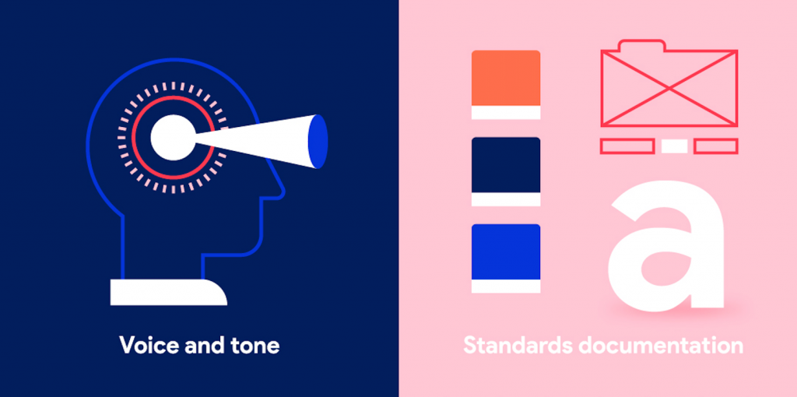
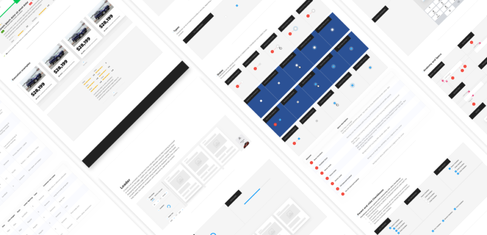

According to research from Forrester, a strong UX design system can improve conversion rates up to 400 percent. But, how can what seems like just another marketing buzzword have such a large effect on conversion? Basically, a UX design system provides the pathway for an optimized user experience (UX). This means that better user experiences lead to an increase in conversion and growth. A well made UX design system for building business websites or mobile apps makes things easier. It also creates ease within both design and web development. Finally, it offers scalability, energy, and consistency, unlike any other solution. These are the pillars that create amazing user experiences, empower brands, and encourage years of growth.
Why Create a UX Design System?
InVision defines a UX design system as a “collection of reusable components, guided by clear standards that can be assembled to build any number of applications.” So, why do companies need this? A company’s digital presence can become chaotic when products must work across multiple platforms, devices, browsers, and environments. Multiple teams working on a brand’s web solutions can easily create variability. As a result, companies create a muddled user experience. Consider these statistics:
- Fifty-two percent of users say a bad mobile experience makes them less likely to engage with a company.
- Seventy percent of users learn about a company through blogs instead of ads.
- Seventy-nine percent of users who don’t like what they find on one site will go back and search for another.
- Sixty percent of users who do not convert cite dissatisfaction, not enough information, slow connection, or small screen as reasons.
Now, we’re starting to see how better UX design can bump conversion rates by up to 400 percent. Inconsistency can easily create a less-than-great UX. For example, HubSpot explained the need for a design system was to “eliminate inconsistencies in the User Interface.”
Four Key Benefits
Design teams need a single guide that transcends channels and platforms. As a result, this makes it possible to create products that provide a seamless experience across the board. Your UX design system should define patterns, rules, and best practices for your team. In addition, it should provide technical data for web designers and engineers. Here are four key benefits you’ll achieve through this process.
Increased efficiency. Applications can appear on the market more quickly through the reuse of components. A UX design system prevents a team from rebuilding the same parts. The result is increased streamlining. Consider this: developers spend 50 percent of their time fixing issues that they could have potentially avoided. As a result, reusable components reduce these errors.
Provide consistency. Shared principles and rules help designers and developers create a consistent experience across all platforms. “Brands are built through the consistent delivery of the brand promise through all stakeholder touchpoints. It is the consistent, desired experience that builds trust and trust is the foundation for loyalty and promotion,” explains Forbes.
Create a scalable process. Increased efficiency leads to a scalable development process. Ready-made components that can quickly be put together and pushed out for testing fuel development like nothing else. Additionally, a UX design system can help you rapidly onboard new team members. It’s like providing a handbook for quick reference.
Better customer focus. Designers and developers can spend less time thinking about these details and focus on creating the best user experience since everything has been agreed upon.

Getting Started
Design systems are not a one-size-fits-all product. Before you get started, carefully ask why you are building it. What product strategy is the system going to support? Consider these five tips as you start your journey.
1. Take inventory. First, look at your current design across all platforms. Note all visual qualities and take stock of the elements you’re using.
2. Keep it simple. Secondly, is the design system used by everyone from designers and researchers to front-end developers and copywriters? Remove unnecessary complexity by using only approved elements. It is also important to get input from end-users.
3. Develop a visual design language. Thirdly, consider these four design elements in every component on the screen:
- Color: Pick one to three primary colors that represent your brand. Give designers a few options by including a range of tints.
- Typography: Limit the number of fonts to avoid overloading the user.
- Sizing and Spacing: Think rhythm and balance.
- Imagery: Set standards for illustrations, images, and icons giving designers options to select the best image format for the situation.
4. Create a UI library. Fourth, not all components in your current UI are essential, including buttons, forms, modules, and images. Get rid of redundancies and outdated elements.
5. Document components. Lastly, specify in detail what each part is and when to use it. Otherwise, your guidelines just become a pattern library.

Evolve with a UX Design System
A brand’s UX design system is a dynamic ecosystem. It’s a balance of providing a foundation for quality and consistency while empowering users to use creativity to push innovation. In addition, your UX design system should be created in an environment that encourages cooperation and shared ownership. If it is viewed as a policing system, it holds back your production. In fact, Booking design refers to design system development as being a group of gardeners, not gatekeepers. They state that “the moment your design system becomes a hindrance for a product team, you have an opportunity to collaborate and come up with solutions that will benefit others later on.”
At Isadora Agency, we dedicate ourselves to changing the way brands connect with audiences in the digital world. Develop an effective UX design system to empower your brand. Our agency is a leader in providing comprehensive UX Design Systems, made from scratch and customized to fit your brand’s needs.